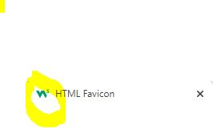

Click here to view HTML tags inside of the <body>
| Tag | Definition | Example(s) |
|---|---|---|
| <!DOCTYPE html> | All HTML documents must start with a <!DOCTYPE> declaration | |
| <html lang="en"> | This tag decides the language. | 你好凸轮先生 |
| <title> </title> | The <title> tag defines the title of the document. | |
| Internal CSS | An internal CSS is used to define a style for a single HTML page.An internal CSS is defined in the <head> section of an HTML page, within a <style> element. | |
| External CSS | An external style sheet is used to define the style for many HTML pages. | |
| Favicon | A favicon is a small image displayed next to the page title in the browser tab. |  |